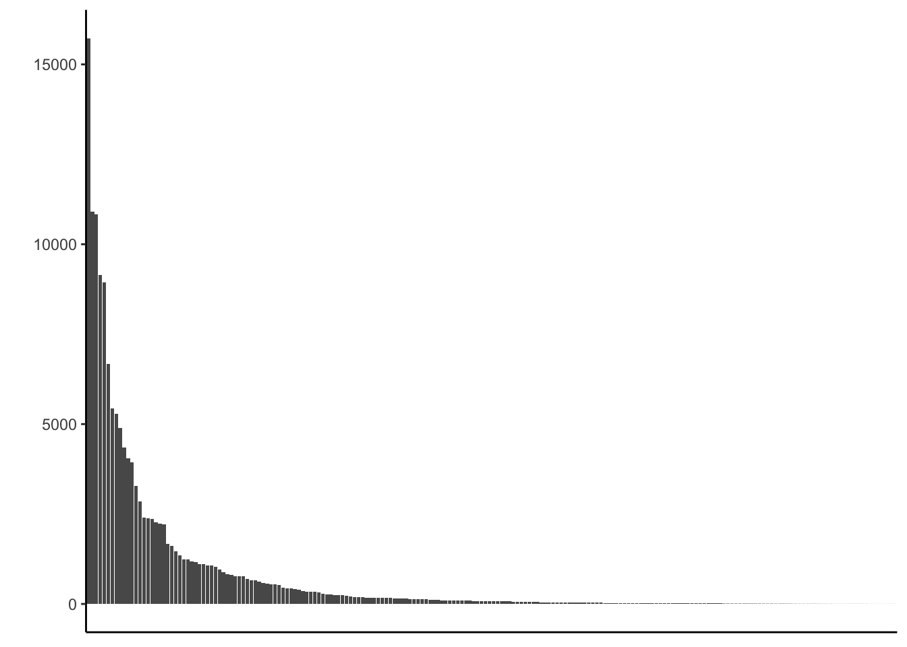

## First check for the required packages, install if needed, and load the libraries.
if (!requireNamespace("BiocManager", quietly = TRUE))
install.packages("BiocManager")
BiocManager::install("sangerseqR")
remotes::install_github("ropensci/bold")
if (!require("pacman")) install.packages("pacman")
pacman::p_load(taxize, maps, ggplot2, dplyr, countrycode, rgbif, data.table, raster, maps, mapproj, sf)Coverage by country
This notebook analyzes the counts of barcodes by country and plots the results.
SI Figure S1: Map of country counts
Start with some data cleaning.
combtab <- read.csv("../data/BoldPhyla_to_Families_combtab_v4.csv")
head(combtab, 2) X.1 X processid institution_storing phylum_taxID
1 1 1 API120-12 Sri Ramaswamy Memorial University 12
2 2 2 CANGI002-17 Museu Paraense Emilio Goeldi 12
phylum_name class_taxID class_name order_taxID order_name family_taxID
1 Magnoliophyta 41 Magnoliopsida 121216 Lamiales 148533
2 Magnoliophyta 41 Magnoliopsida 121216 Lamiales 148533
family_name subfamily_taxID subfamily_name genus_taxID genus_name
1 Acanthaceae NA 415894 Peristrophe
2 Acanthaceae 264310 Acanthoideae 148534 Ruellia
species_taxID species_name subspecies_taxID subspecies_name
1 494465 Peristrophe bicalyculata NA
2 632816 Ruellia inflata NA
collectiondate_start collectiondate_end lat lon coord_source coord_accuracy
1 NA NA NA NA NA
2 NA NA NA NA NA
elev country province_state region sector exactsite rbcL matK trnL ITS2
1 NA rbcL
2 NA Brazil Para rbcL matK ITS
multi gb_rbcL gb_matK gb_trnL gb_ITS
1 rbcL---
2 rbcL-matK--ITS #round coordiantes to nearest 1 degree
combtab$lat <- as.numeric(as.character(combtab$lat))
combtab$lon <- as.numeric(as.character(combtab$lon))
#ggplot wrapper of map()
world_map <- map_data("world")
crs(world_map)[1] NA#build a dataframe / matrix of country counts to plot
myCodes <- data.frame(table(combtab$country))
colnames(myCodes)<-c("country", "n")
#Convert country names to "Getty Thesaurus" names for BOLD
myCodes$country <- countrycode(myCodes$country, "country.name", "country.name")
myCodes$country[which(myCodes$country=="United States")]<-"USA"
myCodes$country[which(myCodes$country=="United Kingdom")]<-"UK"
myCodes$country[which(myCodes$country=="Congo - Kinshasa")]<-"Democratic Republic of the Congo"
myCodes$country[which(myCodes$country=="Congo - Brazzaville")]<-"Republic of Congo"
myCodes$country[which(myCodes$country=="British Virgin Islands")]<-"Virgin Islands"
myCodes$country[which(myCodes$country=="Bosnia & Herzegovina")]<-"Bosnia and Herzegovina"
myCodes$country[which(myCodes$country=="São Tomé & Príncipe")]<-"Sao Tome and Principe"
myCodes$country[which(myCodes$country=="Trinidad & Tobago")]<-"Trinidad" #Tobago is a separate entity in maps
myCodes$country[which(myCodes$country=="North Macedonia")]<-"Macedonia"
myCodes$country[which(myCodes$country=="Myanmar (Burma)")]<-"Myanmar"
myCodes$country[which(myCodes$country=="Côte d’Ivoire")]<-"Ivory Coast"
myCodes$country[which(myCodes$country=="Czechia")]<-"Czech Republic"
myCodes$country[which(myCodes$country=="Réunion")]<-"Reunion"
myCodes$country[which(myCodes$country=="St. Helena")]<-"Saint Helena"
myCodes$country[which(myCodes$country=="Eswatini")]<-"Swaziland" Map country-level barcode intensity.
#map for country-level intensity
myCodes <- myCodes[is.na(myCodes$country)==F,]
ggpoliticalboundaries <- ggplot(myCodes) + geom_map(dat = world_map, map = world_map, aes(map_id = region), fill = "white", color = "#7f7f7f", size = 0.25) +
geom_map(map = world_map, aes(map_id = country, fill = n), size = 0.25) +
scale_fill_gradient(low = "#fff7bc", high = "#cc4c02", name = "Worldwide specimens") + scale_x_continuous(breaks = seq(-180, 180, by = 60)) + scale_y_continuous(breaks = seq(-90, 90, by = 45)) +
expand_limits(x = world_map$long, y = world_map$lat) + theme_classic() + ylab("") + xlab("") + theme(legend.position = "none") +
geom_hline(yintercept = 0, color = "black", size = 0.5) + geom_hline(yintercept = 23.5, color = "black", linetype = "dashed") +
geom_hline(yintercept = -23.5, color = "black", linetype = "dashed") Warning: Using `size` aesthetic for lines was deprecated in ggplot2 3.4.0.
ℹ Please use `linewidth` instead.ggpoliticalboundaries
#ggsave("ggpoliticalboundaries_20240626_1.pdf", ggpoliticalboundaries, width = 13, height = 8.6, units = "cm")Distribution of country bias - barplot.
#barplot with country counts
countrycounts_bar <- ggplot(myCodes, aes(x = reorder(country, -n), y = n)) +
geom_bar(stat = "identity", width = 0.9) + theme_classic() + xlab("") + ylab("") + theme(axis.title.x=element_blank(), axis.text.x=element_blank(), axis.ticks.x=element_blank())
countrycounts_bar
#ggsave("countrycounts_20240626.pdf", countrycounts, width = 13, height = 4, units = "cm")Distribution of country bias - lineplot.
#line plot with country counts
countrycounts_line <- ggplot(myCodes, aes(x = reorder(country, -n), y = n, group = 1)) +
geom_line() + theme_classic() + xlab("") + ylab("") + theme(axis.title.x=element_blank(), axis.text.x=element_blank(), axis.ticks.x=element_blank())
countrycounts_line
#ggsave("countrycounts_20240626.pdf", countrycounts, width = 8, height = 4, units = "cm")Print dataframe with countries having less than 10 barcodes. We only print the first 10, but there are 38 countries total.
#summarize number of countries with <10
myCodes_less_than_10 <- subset(myCodes, n <10) %>%
arrange(desc(n))
head(myCodes_less_than_10, 10) country n
1 Cape Verde 9
2 Eritrea 9
3 Sierra Leone 9
4 Trinidad 9
5 Guam 8
6 Mayotte 8
7 South Georgia & South Sandwich Islands 8
8 Virgin Islands 7
9 Falkland Islands 7
10 North Korea 7